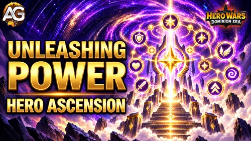

Unleashing Power brings progression missions to hero events in Hero Wars: Dominion Era. This guide covers editions that accompany Ascension releases, revamps, and upgrade events for existing heroes.
The current example is K’arkh’s Path of Legends. Its tables show which upgrades apply to the featured hero, which tasks allow broader progress, and how the listed rewards add up. Later editions may use different heroes, targets, or rewards.

How Unleashing Power Missions Work
The main hero event and Unleashing Power are separate objective groups. In this example, Path of Legends is the main K’arkh event, while Unleashing Power lists hero progression and upgrade targets.
Follow each mission’s counter and claim its available rewards during the event. The requirements in a chain are cumulative targets: reaching a total Glyph level of 150 does not mean adding every earlier target on top of 150.
Not every mission is an Ascension upgrade. The set also covers stars, equipment, Artifacts, Glyphs, skins, abilities, and Gift of the Elements. A hero’s particular Ascension skill changes should be checked in that hero’s skill guide.
K’arkh Edition: Path of Legends
Listed schedule: November 23–29, 2026, lasting seven days. K’arkh is the featured existing hero in this example. Use the Dominion Era event calendar to compare its dates with other events.
This Unleashing Power set has 58 milestones across eight categories. The full listed reward total is 150,800 Valor Coins, subject to the provisional status below.
Mission and Reward Overview
| Mission | Milestones | Final listed requirement | Total Valor Coins (provisional) |
|---|---|---|---|
| Call of Elements | 5 | Receive the Gift of the Elements level 30 for K'arkh | 6,000 |
| Step of Greatness | 5 | Reach the Evolution level 6 for K'arkh | 10,250 |
| Forge of Power | 5 | Promote your hero K'arkh to rank red | 32,250 |
| Artifact Dominion | 5 | Reach the Artifact level 80 for K'arkh | 5,750 |
| Runes of Fate | 5 | Reach the Glyph level totaling 150 for K'arkh | 42,750 |
| New Edge | 15 | Upgrade any hero's skin 150 times | 45,000 |
| Call of the Stars | 10 | Unlock an Ascension glyph in the Ascension Spire 30 times | 5,800 |
| Art of Combat | 8 | Reach the ability level totaling 400 for K'arkh | 3,000 |
| All 58 milestones — provisional total | 150,800 | ||
Each mission total is the sum of its individual stage rewards. It is not an extra bonus paid on top of those stages. In this edition, Valor Coins are used at the main event’s Altar of Fate.
Unleashing Power Mission Milestones
All listed stages appear below in mission order. The reward column shows provisional Valor Coin amounts for the K’arkh example.
Call of Elements
The featured hero must reach the listed Gift of the Elements levels. The final target is level 30; do not add the milestone levels together.
| Stage | Requirement | Valor Coins (provisional) |
|---|---|---|
| 1 | Receive the Gift of the Elements level 5 for K'arkh | 250 |
| 2 | Receive the Gift of the Elements level 10 for K'arkh | 500 |
| 3 | Receive the Gift of the Elements level 15 for K'arkh | 750 |
| 4 | Receive the Gift of the Elements level 20 for K'arkh | 1,500 |
| 5 | Receive the Gift of the Elements level 30 for K'arkh | 3,000 |
| Chain total — provisional | 6,000 | |
Step of Greatness
Evolution levels correspond to the featured hero’s stars. This edition lists targets from two through six stars.
| Stage | Requirement | Valor Coins (provisional) |
|---|---|---|
| 1 | Reach the Evolution level 2 for K'arkh | 250 |
| 2 | Reach the Evolution level 3 for K'arkh | 500 |
| 3 | Reach the Evolution level 4 for K'arkh | 1,000 |
| 4 | Reach the Evolution level 5 for K'arkh | 2,500 |
| 5 | Reach the Evolution level 6 for K'arkh | 6,000 |
| Chain total — provisional | 10,250 | |
Forge of Power
These targets apply to K’arkh’s equipment rank. Red is the final listed rank for this edition.
| Stage | Requirement | Valor Coins (provisional) |
|---|---|---|
| 1 | Promote your hero K'arkh to rank green | 250 |
| 2 | Promote your hero K'arkh to rank blue | 500 |
| 3 | Promote your hero K'arkh to rank violet | 1,500 |
| 4 | Promote your hero K'arkh to rank orange | 5,000 |
| 5 | Promote your hero K'arkh to rank red | 25,000 |
| Chain total — provisional | 32,250 | |
Artifact Dominion
This edition’s final Artifact level target is 80. The wording does not identify a specific Artifact; check the event counter before deciding how to distribute upgrades.
| Stage | Requirement | Valor Coins (provisional) |
|---|---|---|
| 1 | Reach the Artifact level 10 for K'arkh | 150 |
| 2 | Reach the Artifact level 20 for K'arkh | 350 |
| 3 | Reach the Artifact level 40 for K'arkh | 750 |
| 4 | Reach the Artifact level 60 for K'arkh | 1,500 |
| 5 | Reach the Artifact level 80 for K'arkh | 3,000 |
| Chain total — provisional | 5,750 | |
Runes of Fate
The requirement is K’arkh’s combined Glyph level. The final total is 150, rather than one Glyph at level 150.
| Stage | Requirement | Valor Coins (provisional) |
|---|---|---|
| 1 | Reach the Glyph level totaling 10 for K'arkh | 500 |
| 2 | Reach the Glyph level totaling 25 for K'arkh | 750 |
| 3 | Reach the Glyph level totaling 60 for K'arkh | 3,500 |
| 4 | Reach the Glyph level totaling 100 for K'arkh | 8,000 |
| 5 | Reach the Glyph level totaling 150 for K'arkh | 30,000 |
| Chain total — provisional | 42,750 | |
New Edge
The task explicitly allows any hero’s skin. The counter reaches 150 upgrade actions, not one skin at level 150, and does not restrict the upgrades to K’arkh.
| Stage | Requirement | Valor Coins (provisional) |
|---|---|---|
| 1 | Upgrade any hero's skin 10 times | 3,000 |
| 2 | Upgrade any hero's skin 20 times | 3,000 |
| 3 | Upgrade any hero's skin 30 times | 3,000 |
| 4 | Upgrade any hero's skin 40 times | 3,000 |
| 5 | Upgrade any hero's skin 50 times | 3,000 |
| 6 | Upgrade any hero's skin 60 times | 3,000 |
| 7 | Upgrade any hero's skin 70 times | 3,000 |
| 8 | Upgrade any hero's skin 80 times | 3,000 |
| 9 | Upgrade any hero's skin 90 times | 3,000 |
| 10 | Upgrade any hero's skin 100 times | 3,000 |
| 11 | Upgrade any hero's skin 110 times | 3,000 |
| 12 | Upgrade any hero's skin 120 times | 3,000 |
| 13 | Upgrade any hero's skin 130 times | 3,000 |
| 14 | Upgrade any hero's skin 140 times | 3,000 |
| 15 | Upgrade any hero's skin 150 times | 3,000 |
| Chain total — provisional | 45,000 | |
Call of the Stars
These are Ascension glyph unlocks in the Ascension Spire. The task does not name K’arkh. Its final listed target is 30 unlocks.
| Stage | Requirement | Valor Coins (provisional) |
|---|---|---|
| 1 | Unlock an Ascension glyph in the Ascension Spire 1 time | 100 |
| 2 | Unlock an Ascension glyph in the Ascension Spire 3 times | 200 |
| 3 | Unlock an Ascension glyph in the Ascension Spire 5 times | 300 |
| 4 | Unlock an Ascension glyph in the Ascension Spire 7 times | 400 |
| 5 | Unlock an Ascension glyph in the Ascension Spire 9 times | 500 |
| 6 | Unlock an Ascension glyph in the Ascension Spire 11 times | 600 |
| 7 | Unlock an Ascension glyph in the Ascension Spire 15 times | 700 |
| 8 | Unlock an Ascension glyph in the Ascension Spire 20 times | 800 |
| 9 | Unlock an Ascension glyph in the Ascension Spire 25 times | 1,000 |
| 10 | Unlock an Ascension glyph in the Ascension Spire 30 times | 1,200 |
| Chain total — provisional | 5,800 | |
Art of Combat
The requirement adds up K’arkh’s ability levels. The final target is 400 in total, not one ability at level 400.
| Stage | Requirement | Valor Coins (provisional) |
|---|---|---|
| 1 | Reach the ability level totaling 50 for K'arkh | 100 |
| 2 | Reach the ability level totaling 100 for K'arkh | 150 |
| 3 | Reach the ability level totaling 150 for K'arkh | 200 |
| 4 | Reach the ability level totaling 200 for K'arkh | 300 |
| 5 | Reach the ability level totaling 250 for K'arkh | 400 |
| 6 | Reach the ability level totaling 300 for K'arkh | 500 |
| 7 | Reach the ability level totaling 350 for K'arkh | 600 |
| 8 | Reach the ability level totaling 400 for K'arkh | 750 |
| Chain total — provisional | 3,000 | |
Glyph Levels and Ascension Glyphs Are Different
Runes of Fate adds up the featured hero’s Glyph levels. For this K’arkh edition, its targets are 10, 25, 60, 100, and 150.
Call of the Stars asks for Ascension glyph unlocks in the Ascension Spire. Its targets are 1, 3, 5, 7, 9, 11, 15, 20, 25, and 30. The wording does not name K’arkh, so check its counter when deciding which eligible Ascension upgrades to make.
These counters are independent. Progress in one should not be assumed to complete the other.
Plan Your Upgrades and Resources
- Inspect existing progress first. If the featured hero is already developed, check which milestones the event recognizes before purchasing more upgrades.
- Compare the next reward with its upgrade cost. A larger coin reward does not automatically justify an expensive equipment rank or Glyph target.
- Choose useful skin upgrades. New Edge explicitly allows any hero’s skin, so plan upgrades that help your regular teams.
- Keep the totals separate. Glyph level, ability level, Gift of the Elements, and Ascension each have their own requirements and resource costs.
- Check overlapping events. Planned upgrades may also contribute to other active progression events. Verify each event’s counter rather than assuming every action counts everywhere.
- Set a stopping point. A maximum milestone is an available target, not a requirement to complete every category. Recheck the provisional rewards when the event opens.
Future Hero Ascension and Upgrade Editions
The featured hero and exact thresholds may change in later editions. Use the mission wording to distinguish hero-specific upgrades from tasks that allow broader account progress.
This guide uses K’arkh as an existing-hero example. For a character’s introduction event, use the separate Unleashing Power new hero missions guide, which has its own edition-specific tables.
Do not assume that an Ascension release, a hero revamp, and a new hero launch share the same mission rewards or limits simply because each event uses the Unleashing Power name.
Hero Ascension Event FAQ
Is this page only for K’arkh?
No. It covers Unleashing Power for hero Ascension and upgrade events. K’arkh is the current example used for the exact mission tables.
When is the listed K’arkh event?
Path of Legends is listed for November 23–29, 2026. Check the in-game timer for its exact start and end time.
Are the 150,800 Valor Coins guaranteed for November?
No. This is the sum of the currently listed provisional stage rewards. The November reward amounts still need in-game confirmation.
Is a mission’s total an extra reward?
No. The total shown here adds up the rewards for that mission’s individual stages.
Do all missions require upgrading K’arkh?
No. Six categories name K’arkh, New Edge explicitly allows any hero’s skin, and Call of the Stars does not name a particular hero.
Does Runes of Fate mean Ascension glyph unlocks?
No. It checks K’arkh’s combined Glyph level. Call of the Stars is the category that asks for Ascension Spire unlocks.
Will every later Ascension event use these targets?
Not necessarily. These tables describe the K’arkh example. Check the featured hero, requirements, and rewards for each later edition.